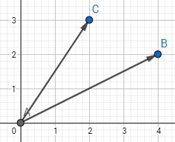
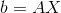
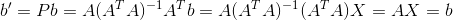
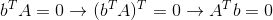
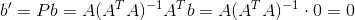
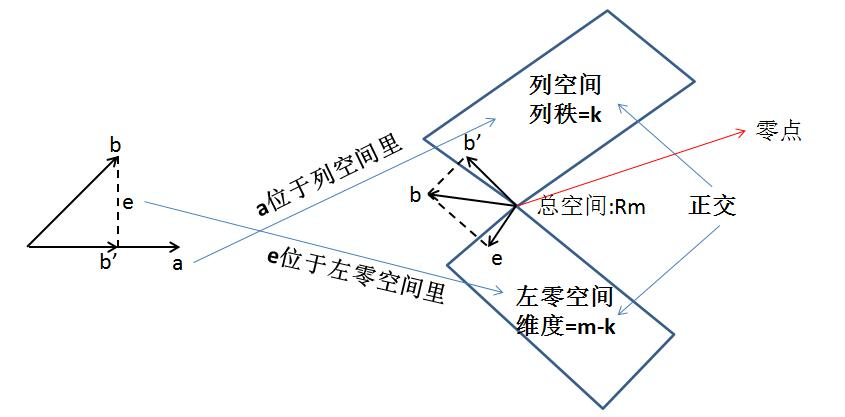
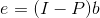
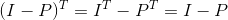
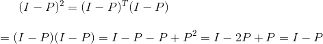

我们先来看两条向量的投影问题，假设有向量AB和AC：

那么AC投影到AB上的向量，就是过C作AB的垂线，AD就是AC投影到AB上的向量。
这时向量DC垂直于AB，有：
求出来的x就是AD占AB的比例，所以AD就求出来了：
这时，我们对这个结果进行一点转化：
我们只是用了乘法结合律，结果就变成了一条很神奇的公式。这时，我们将矩阵P称为投影矩阵（为什么是矩阵？分母是个常数，分子是一列向量乘以一行向量，得到的结果不就是2*2的矩阵）：
这个矩阵具有两个重要的性质，一是其转置等于本身：
二是其无论乘以多少个本身结果都是本身，这点不难理解，对向量AC投影一次得到了向量AD，那么再对向量AD投影一次得到了什么？还是AD！无论投影多少次都是AD。这里证明平方的情况：
以此类推，无论投影多少次都等于本身。
接下来我们看下高维点的情况，在一个三维空间中，如何将点投影到一个面上去。
如图，已知点D，平面FGE，要想对点D做一个投影到平面FGE上，首先在D点做一垂线DI垂直平面FGE，而I点就是D点在平面上的投影，那么I点如何求？
按照上个例子的做法，已知向量ID垂直于平面FGE，我们假设平面FGE由两条线性无关的向量FE和FG组成，所以平面可以表示成（向量可看成矩阵的列向量）
那么有：
整合成矩阵可得
如果矩阵A可逆（如何判断矩阵可逆，可参考矩阵可逆？），那么A的转置乘以A也可逆。那么结果可化成
可得投影矩阵P为：
对比下向量的投影矩阵，是否十分相似：
那么对于矩阵A的投影矩阵P，是否跟向量的投影矩阵一样有那两个性质呢？
首先还是P的转置等于P：
接着P的平方等于P：
那么对于更高维的呢？跟三维的一致。已知有一空间为A，那么点D在空间上的投影是多少？令A为：
那么点D与投影到空间A上的点I之间的向量正交于空间A。有：
跟三维空间时一致的论证：
同样，如果矩阵A可逆，那么投影矩阵P为：
如果矩阵A不可逆，那其投影矩阵怎么求？我觉得可以先将矩阵A中线性相关的向量去掉，那么这样矩阵A就是可逆矩阵了，而且其列空间没变，其投影矩阵也不会变。
现在，我们已经得到了矩阵A的投影矩阵P，那么现在有两个特殊问题需要解决，一是如果需要投影的空间正好存在于矩阵A的列空间里，那么其投影为？假定需要投影的空间为b，其投影为b'，那么有：


很明显，如果本来要投影的空间正好在矩阵A的列空间里，那么无论怎么投影都是其本身。
接下来是另一个问题，如果要投影的空间b正交于矩阵A，那么b与A的列空间正交，那么其投影b'为：


这个比较难想象了，但是如果考虑一下左零空间的概念（如果不知道什么是左零空间，可以参阅矩阵的四大子空间），如果b正交于A的列空间，那么b不就存在A的左零空间里了，那么其投影肯定为0。
下面结合之前讲过的子空间的那张图来分析下：

对于一个空间b，其投影到矩阵A列空间的b'与其投影到矩阵A左零空间的e都是属于投影。b'就是之前一直所讲的投影矩阵，e则为：

其中I-P也是投影矩阵，也满足投影矩阵的两个性质：一是转置等于本身

二是平方等于本身：

对于投影矩阵用法，下节来介绍：AX=b无解